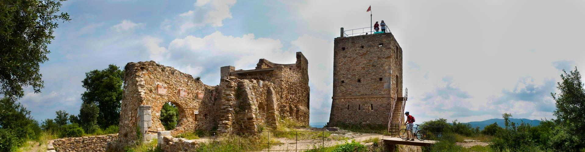

Ruta · Girona
Aquest itinerari permet conèixer una Girona desconeguda, a tocar del centre històric de la ciutat, i descobrir una bona mostra del patrimoni natural, cultural i de tot allò que ha format part dels…